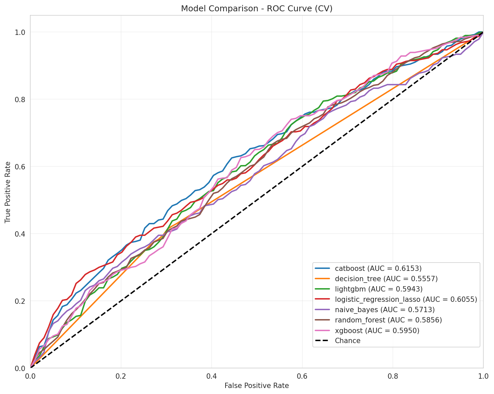
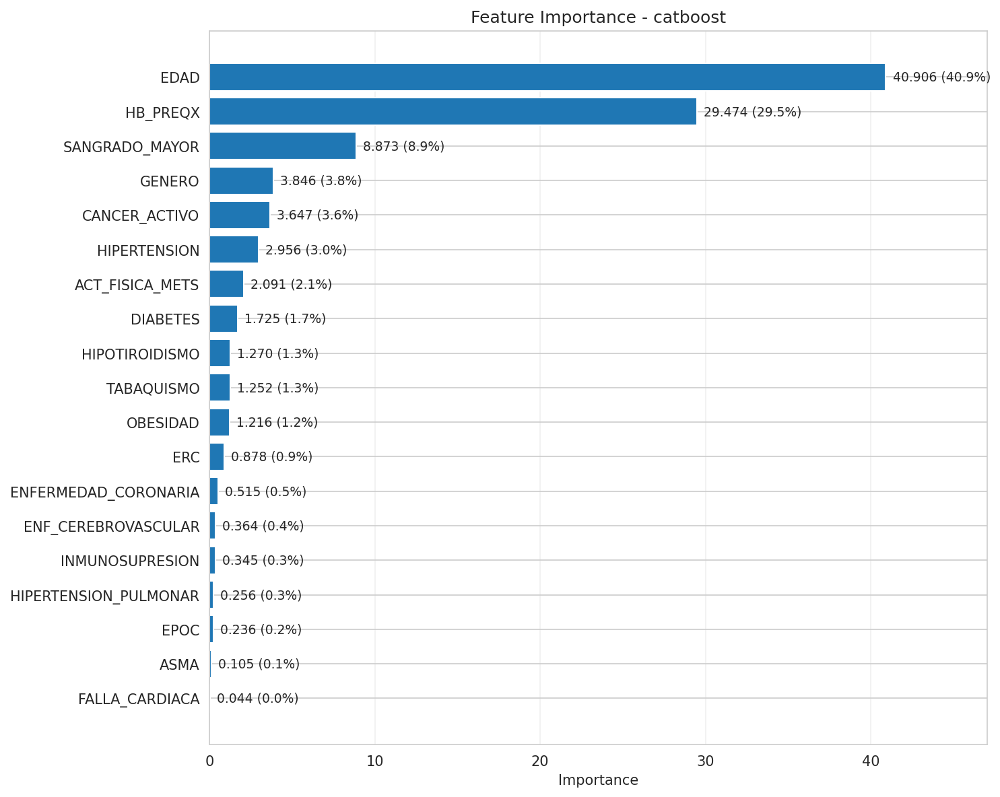

Objetivo: establecer linea base de AUC ROC con modelos por defecto
| Modelo | AUC ROC | Posicion |
|---|---|---|
| catboost | 0.6153 | 1 |
| logistic_regression_lasso | 0.6055 | 2 |
| xgboost | 0.5950 | 3 |


CatBoost abre como mejor baseline con AUC 0.6153. Variables mas influyentes: EDAD (40.91%), HB_PREQX (29.47%), SANGRADO_MAYOR (8.87%).